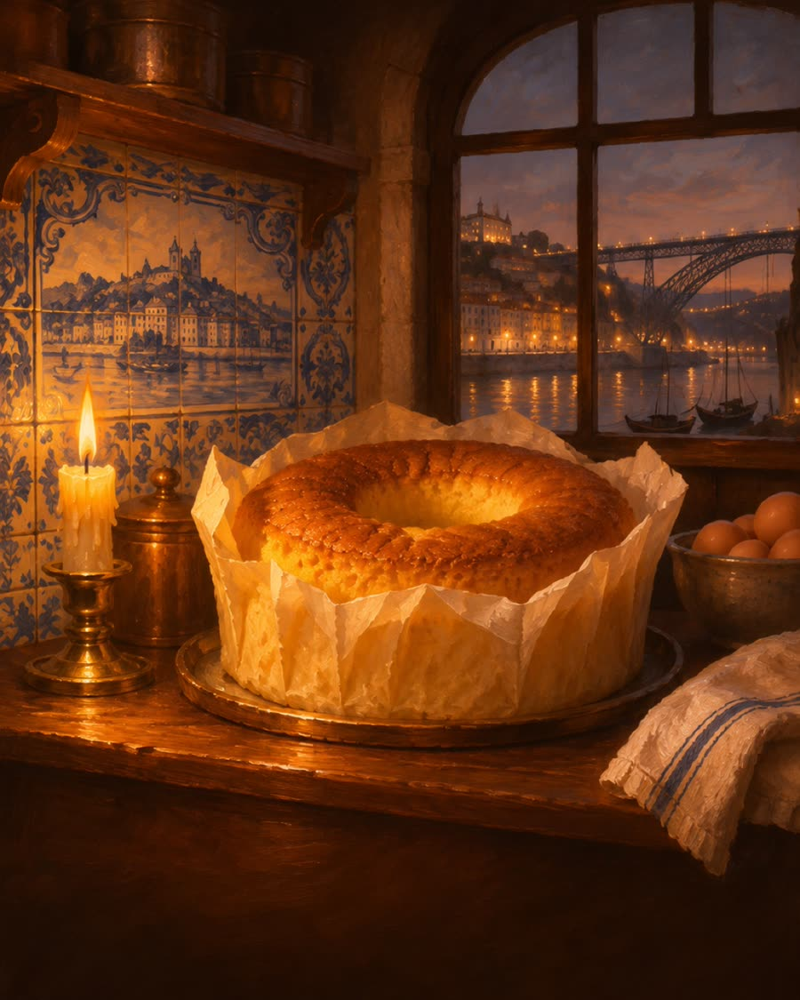

순례자의 한끼한밤
순례자의 한끼한밤편의점에서 파는 카스텔라,
나이를 따지면 400살이 넘습니다.
카스텔라는 왠지 일본 과자 같습니다. 포장지에 일본 글씨가 적혀 있는 경우도 많고, 일본 나가사키가 카스텔라로 유명하기도 하죠. 그런데 이 폭신한 빵의 출발점을 따라가 보면, 일본보다 훨씬 서쪽에 있는 나라가 나옵니다. 포르투갈입니다.
1543년, 포르투갈 배가 일본에 닿다
1543년, 포르투갈 사람들이 탄 배가 일본 남쪽 다네가시마라는 섬에 닿습니다. 유럽 사람이 일본 땅을 밟은 첫 기록입니다. 그 뒤로 포르투갈 상인과 선교사들이 꾸준히 일본을 오갔고, 이들이 가장 많이 드나든 항구가 나가사키였습니다.
배에는 총, 유리, 향신료 같은 물건만 실려 있었던 게 아닙니다. 빵과 과자를 굽는 방법도 같이 실려 왔습니다.
그런데 이름은 스페인?
재밌는 건 이름입니다. '카스텔라'는 포르투갈어 Pão de Castela(빠옹 드 카스텔라), 즉 '카스티야의 빵'에서 왔다는 설명이 가장 유력합니다. 카스티야는 지금의 스페인 한가운데 있던 옛 왕국 이름이에요. 포르투갈 사람이 가져온 빵인데, 이름에는 이웃 나라가 들어가 있는 셈입니다.
이름이 건너온 길
왜 그렇게 불렀는지는 확실하지 않습니다. 성(castelo) 모양으로 부풀어 오른 모습에서 왔다는 이야기도 있어요. 확실한 건 하나, 이 단어가 일본으로 건너가 '카스테라'가 됐다는 것입니다.
1624년부터 굽는 가게
나가사키에는 1624년에 문을 연 과자점이 있습니다. 카스텔라를 굽기 시작한 지 400년이 넘었는데, 지금도 영업 중입니다. 카스텔라가 '400살 빵'이라는 말은 여기서 나왔습니다.
나가사키의 한 과자점이 카스텔라를 굽기 시작한 해.
그 가게는 지금도 문을 열고 있습니다.
일본에서 카스텔라는 조금씩 모양이 바뀌었습니다. 물엿을 넣어 더 촉촉해졌고, 네모난 틀에 구워 길쭉하게 자르는 지금의 모습이 됐습니다. 그러니 지금 우리가 아는 카스텔라는 '포르투갈에서 출발해 일본에서 완성된 빵'이라고 하는 게 맞겠네요.
포르투갈에는 아직 있을까?
있습니다. 포르투갈에는 지금도 빠옹 드 로(pão-de-ló)라는 빵이 있어요. 달걀, 설탕, 밀가루로 만드는 폭신한 스펀지 케이크인데, 카스텔라의 친척으로 꼽힙니다. 지역마다 모양이 조금씩 달라서, 가운데가 촉촉하게 덜 익은 것처럼 만드는 곳도 있습니다.

포르투 빵집 진열장에서 빠옹 드 로를 보게 되면, 그게 나가사키 카스텔라의 먼 조상이라는 설을 떠올려 보세요. 스페인의 비스코초에서 왔다는 설도 있어요. 저도 언젠가 포르투에 가면 제일 먼저 사 먹어 볼 빵 중 하나입니다.
한눈에 보는 연표
한눈에 보는 카스텔라의 길
- 1543
포르투갈 배가 처음 일본(다네가시마)에 닿음
- 16세기 후반
나가사키가 포르투갈 무역의 중심 항구가 됨
- 1624
나가사키의 한 과자점이 카스텔라를 굽기 시작, 지금도 영업 중
- 지금
포르투갈에는 친척 빵 '빠옹 드 로'가 그대로 남아 있음
카스텔라가 언제, 어떤 길로 한국에 들어왔는지는 확실한 기록을 찾지 못했습니다. 다만 일본을 거쳐 우리 동네 빵집까지 왔다고 보는 게 자연스럽습니다.
오늘 밤 디저트로,
400살 빵 한 조각 어떠세요?
For pilgrims passing by
Castella, the soft sponge cake sold in every Korean convenience store, is more than 400 years old. Portuguese ships first reached Japan in 1543, and through the port of Nagasaki they brought bread and cake recipes. The name most likely comes from the Portuguese "pão de Castela", bread of Castile, an old Spanish kingdom. A Nagasaki shop has been baking castella since 1624 and is still open. In Portugal, its cousin pão-de-ló is still sold in bakeries today.
참고한 자료
- 1543년 포르투갈인의 일본 도착(다네가시마)은 널리 확인된 사실입니다
- 이름의 유래는 'pão de Castela(카스티야의 빵)'설이 가장 유력하며, 다른 설도 있습니다
- Wikipedia 'Castella', nippon.com 'Nagasaki Castella' 등
- "폭풍에 떠밀려 온 수도사가 전했다"는 이야기는 전설이라 쓰지 않았습니다
한끼한밤 이야기
- 1화 · 떡볶이는 원래 빨간 음식이 아니었다
- 2화 · 빵 한 글자의 뿌리는 포르투갈
- 3화 · 노란 화살표, 시작은 신부님 한 분
- 4화 · 덴푸라, 이름은 포르투갈에서 왔다?
- 5화 · 순례길의 진짜 끝은 산티아고가 아니다
- 글 · 카스텔라, 400년 전 바다를 건너온 빵 (지금 읽는 글)
- 글 · 에그타르트, 1837년부터 지킨 레시피
- 글 · 순례자가 천 년 동안 가리비를 단 이유
🕯️ 오늘 밤 이야기는 여기까지.
다음 이야기는 리스본 수도원에서 시작된 에그타르트의 비밀입니다.